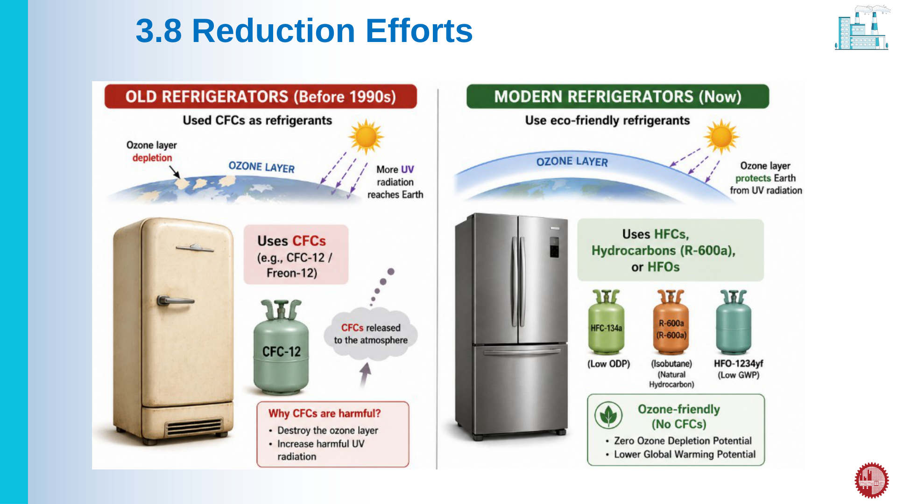

Chapter 3 covers the fundamentals of air pollution — its sources, classification of pollutants, health effects, and control technologies. The key distinction between primary and secondary pollutants is frequently tested.
| Industry | Major Pollutants |
|---|---|
| Power plants (coal) | SO₂, NOₓ, CO₂, fly ash, Hg |
| Iron & steel | CO, SO₂, PM, NOₓ, H₂S |
| Cement industry | PM (dust), SO₂, NOₓ |
| Petroleum refinery | SO₂, H₂S, VOCs, PM |
| Chemical plants | HCl, HF, NH₃, Cl₂, VOCs |
| Textile industry | Dye vapors, formaldehyde, NH₃ |
| Motor vehicles | CO, NOₓ, UHC, PM₂.₅, Pb (old) |
Definition: Pollutants emitted directly from a source into the atmosphere in harmful form.
Definition: Pollutants formed in the atmosphere by chemical reactions between primary pollutants and/or other atmospheric constituents.
| Pollutant | Symbol | Primary/Secondary | Main Source | Key Health Effect |
|---|---|---|---|---|
| Sulfur dioxide | SO₂ | Primary | Coal combustion | Respiratory irritation, acid rain precursor |
| Nitrogen oxides | NOₓ | Primary | Combustion | Lung damage, smog precursor |
| Carbon monoxide | CO | Primary | Incomplete combustion | Binds hemoglobin; fatal at high conc. |
| Ozone | O₃ | Secondary | NOₓ + VOC + UV | Eye/lung irritation, crop damage |
| Particulate matter | PM₂.₅/PM₁₀ | Both | Combustion, dust | Deep lung penetration, cardiovascular |
| Lead | Pb | Primary | Smelting, old petrol | Neurotoxin, especially for children |
| Pollutant | Health Effect | Concentration of Concern |
|---|---|---|
| CO | Forms carboxyhemoglobin; headache → unconsciousness → death | >35 ppm (8-hr) |
| SO₂ | Bronchoconstriction, asthma attacks, respiratory irritation | >0.14 ppm (24-hr) |
| NOₓ | Pulmonary edema, reduced resistance to infection | >0.053 ppm annual |
| O₃ | Eye/throat/lung irritation; impairs lung function | >0.07 ppm (8-hr) |
| PM₂.₅ | Deep lung penetration; cardiovascular & respiratory disease | >35 μg/m³ (24-hr) |
| Pb | Neurotoxicity, learning disabilities in children | >0.15 μg/m³ |
Large chamber; particles settle by gravity. Only effective for coarse particles (>75 μm). Low cost, low efficiency.
Swirling motion; centrifugal force throws particles to wall. Effective for 5–100 μm. No moving parts; widely used.
Dusty gas passes through fabric bags; particles captured. Very high efficiency (>99%) even for fine PM. Used in cement, power plants.
Particles charged by corona discharge; collected on opposite-polarity plates. High efficiency (>99%) for PM₂.₅. Used in coal power plants, steel mills.
Water spray contacts polluted gas; particles captured in droplets. Removes both PM and some gases simultaneously. Good for sticky/hygroscopic particles.

Old ozone-depleting CFCs vs modern HFC alternatives — ozone depletion potential comparison
Air quality standards define the maximum permissible concentration of pollutants in ambient air.
| Pollutant | Bangladesh Standard | WHO Guideline | Averaging Period |
|---|---|---|---|
| PM₁₀ | 150 μg/m³ | 45 μg/m³ | 24-hour |
| PM₂.₅ | 65 μg/m³ | 15 μg/m³ | 24-hour |
| SO₂ | 365 μg/m³ | 40 μg/m³ | 24-hour |
| NO₂ | 100 μg/m³ | 25 μg/m³ | 24-hour |
| CO | 10 mg/m³ | 10 mg/m³ | 8-hour |
| O₃ | 235 μg/m³ | 100 μg/m³ | 8-hour |
| Pb | 1.5 μg/m³ | 0.5 μg/m³ | 3-month |
The AQI converts concentration readings into a simple 0–500 scale to communicate air quality to the public:
| AQI | Category | Meaning |
|---|---|---|
| 0–50 | Good | Air quality is satisfactory |
| 51–100 | Moderate | Acceptable for most; sensitive groups affected |
| 101–150 | Unhealthy for Sensitive Groups | Sensitive people should reduce outdoor activity |
| 151–200 | Unhealthy | Everyone may be affected |
| 201–300 | Very Unhealthy | Health warnings; everyone affected |
| 301–500 | Hazardous | Emergency conditions; avoid outdoor activity |
| Aspect | Primary Pollutants | Secondary Pollutants |
|---|---|---|
| Definition | Emitted directly from source into atmosphere in harmful form | Formed in atmosphere by chemical reactions of primary pollutants |
| Formation | At the point of emission | After emission, in the atmosphere |
| Examples | SO₂, NOₓ, CO, PM, Pb, UHC, H₂S | O₃, H₂SO₄, HNO₃, PAN, secondary PM₂.₅ |
| Source control | Directly controlled at source | Controlled by reducing precursors (NOₓ, VOC) |
| Timing | Present near emission source | May form far from original source |
Key example: SO₂ (primary) + H₂O + ½O₂ → H₂SO₄ (secondary) → acid rain
Photochemical smog: NOₓ + VOC (primary) + UV → O₃ + PAN (secondary pollutants)
By origin:
By type (anthropogenic):
An Electrostatic Precipitator (ESP) removes fine particles from gas streams using electrostatic forces. The working principle involves four steps:
Efficiency: >99% for PM₂.₅. Used in coal power plants, cement kilns, steel mills. Limitation: Less effective for high-resistivity dust (e.g., fly ash from low-sulfur coal).